engineeringkit: Computational Engineering in Python#
engineeringkit makes the models behind 12 engineering domains computable, inspectable and visualizable. Choose a domain to find its foundational ideas, runnable examples and full API in one place. NumPy and SciPy provide mature numerical solvers; EngineeringKit exposes engineering equations, SI conventions and intermediate results for learning and teaching.

Each domain at a glance#
engineeringkit.aerodynamics– Airfoil and wing baselines, drag polars and compressible flow.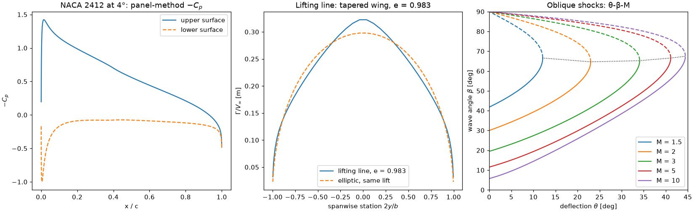
engineeringkit.communications– Modulation and pulse shaping, noise, capacity, detection, PCM, source and channel coding, fading and link budgets.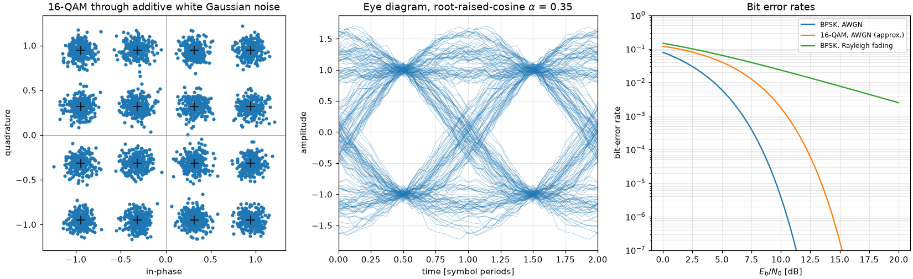
engineeringkit.control_systems– Classical stability, compensator design, PID with anti-windup, nonlinear loops, state feedback, LQR and estimation.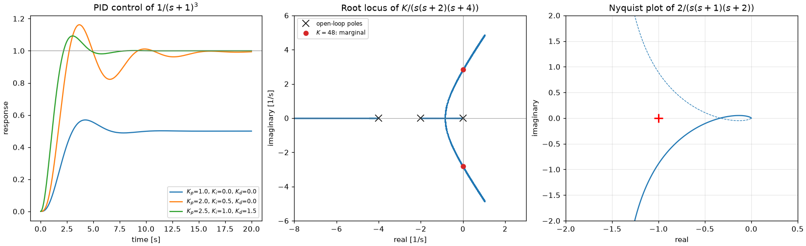
engineeringkit.electrical_engineering– DC and AC circuits, transients, electronics, machines and power systems.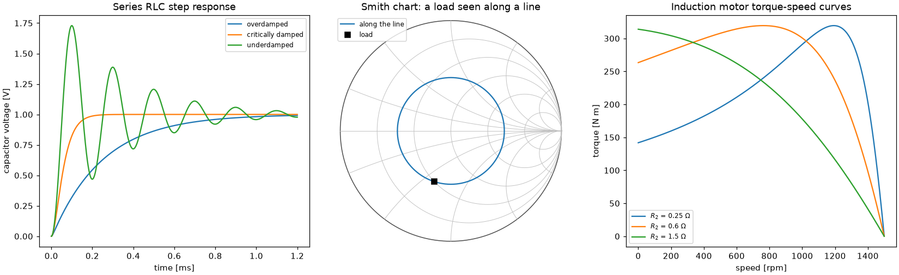
engineeringkit.fluid_engineering– Hydrostatics, flow measurement, momentum, pipe friction, drag, similarity, open channels, pumps and networks.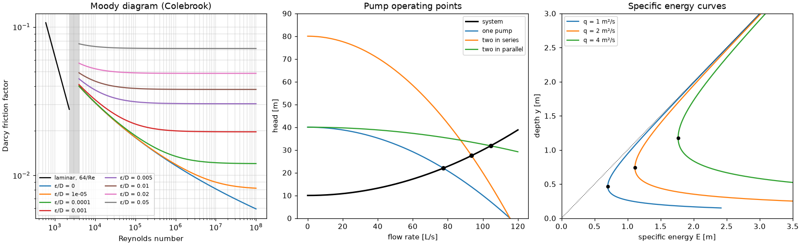
engineeringkit.heat_transfer– Conduction, convection, radiation, fins and heat exchangers.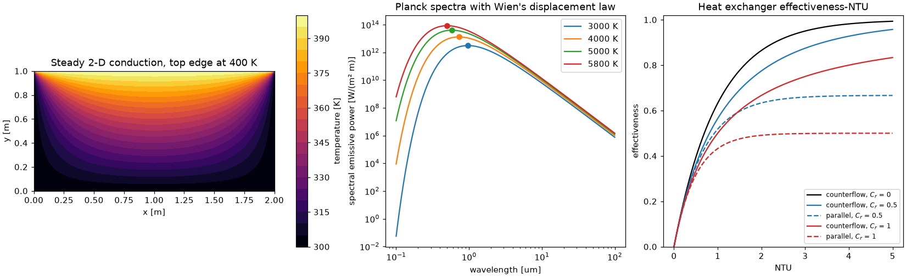
engineeringkit.materials– Crystals and diffusion, elastic constants, hardness, yield criteria, composites and laminates, fatigue and notches, fracture, creep and dislocation plasticity.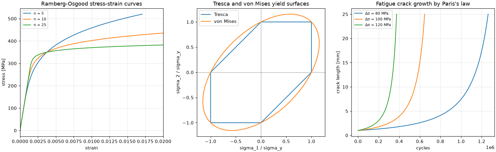
engineeringkit.mechanical_engineering– Rigid-body motion, Lagrange’s equations, machine elements, mechanisms, cams and multi-degree-of-freedom vibration.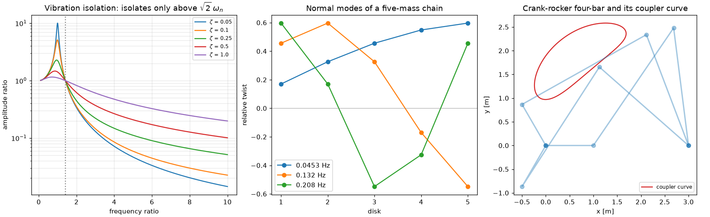
engineeringkit.reliability– Lifetimes and life data, accelerated testing, networks, structural reliability, FMEA, fault trees and maintenance.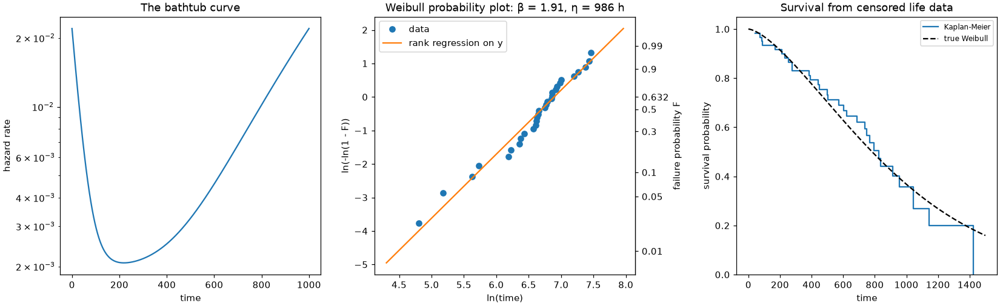
engineeringkit.signal_processing– Sampling and rate conversion, the FFT and DCT, spectra and AR models, IIR and FIR design, adaptive filters.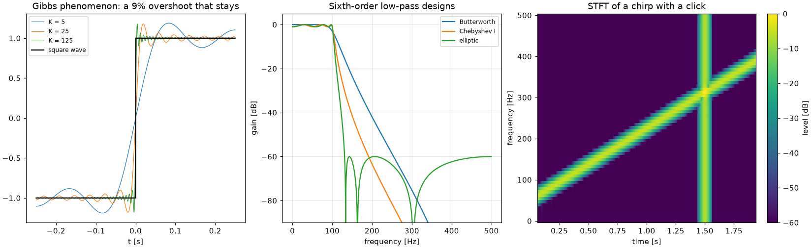
engineeringkit.structural_engineering– Members, sections, beams on any supports, columns, stress and strain at a point, pressure vessels, energy methods, trusses, frames, cables and arches.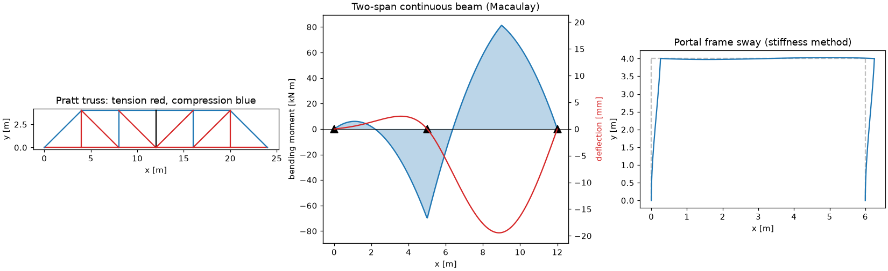
engineeringkit.thermodynamics– Ideal and real gases, mixtures, the two laws, steady-flow devices, engine and refrigeration cycles, exergy, steam properties, psychrometrics and combustion.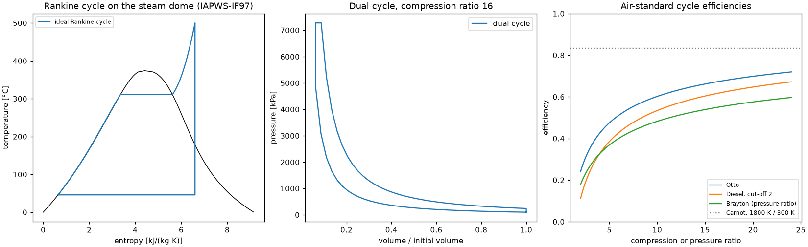


Start here#
Installation and quickstart explains installation and basic use, and the quickstart notebook runs in Colab or in JupyterLite. Four tutorials follow one problem across several domains: A beam from load to fatigue life, A feedback loop in the time and frequency domains, A power plant from cycle to cooling tower and A radio link from antenna to bit errors. Each domain also has a set of exercises with worked solutions. The domain guides describe units, sign conventions and model assumptions; Numerical validation policy records the benchmark policy, and Scope and remaining limitations identifies remaining scope limits. Version 0.2.0 includes all twelve domains and enforces 100% production statement coverage. That metric does not prove scientific correctness or model applicability.
from engineeringkit.structural_engineering import SimplySupportedBeam
beam = SimplySupportedBeam(5, 200e9, 8e-6)
result = beam.solve_point_load(10000)
print(result.summary())
fig, axes = result.plot()
Related toolkits
Sibling Python toolkits for learning and teaching, built the same way:
blockchainkit – cryptography, consensus and blockchain systems
chemistrykit – computational chemistry
financialkit – quantitative finance
mathematicskit – computational mathematics
physicskit – computational physics
tbkit – tight-binding models, band topology and quantum transport